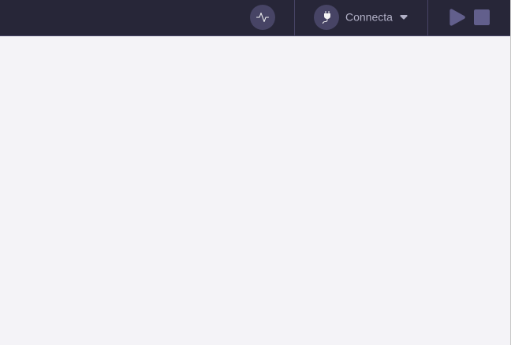
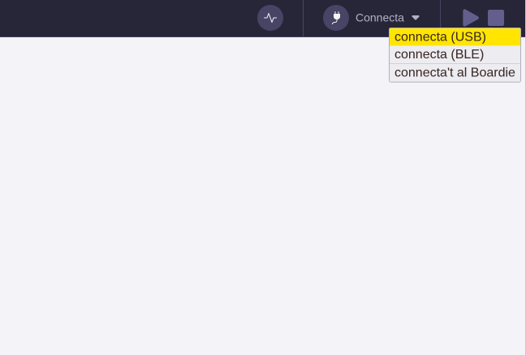
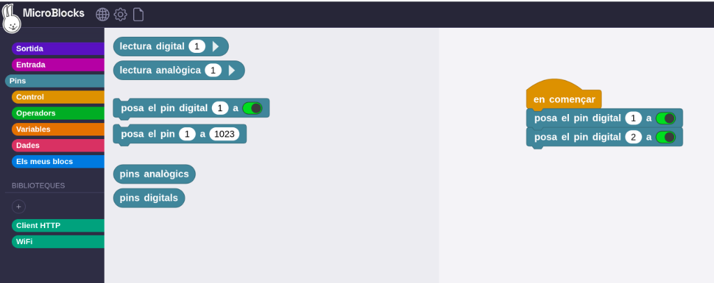

Les Plaques ESP32 Plus + Imagina 3dBot V4, Mapa de Pins i Diagrames de Flux
Abans de programar les antenes i el sistema d'emergències entre les comunitats de Pocona i l'Hospital de Cocaipata, descobrirem l'arquitectura de la placa ESP32 Plus STEAMakers amb la shield Imagina 3dBot V4, com es tradueixen els seus pins a MicroBlocks i com s'organitzen les ordres amb diagrames de flux.
💡 Les 3 idees clau que aprendràs avui:
- 🧠 Sensors, Microcontrolador i Actuadors: Els Sensors (els sentits) capten informació de l'entorn; el Microcontrolador (el cervell) processa la informació i pren decisions; i els Actuadors (els músculs) actuen produint llum o so.
- 🔷 Els robots pensen amb diagrames de flux: Utilitzem rectangles blaus per a les ordres directes (accions) i rombes grocs per a les preguntes amb resposta Sí / No (decisions).
- 💻 Programació visual per blocs: Amb MicroBlocks connectem la placa per cable USB al Chromebook i donem instruccions visuals que la placa executa en temps real.
1. Arquitectura del Sistema: Entrada (Sensors) ➔ Procés (ESP32) ➔ Sortida (Actuadors)
A les muntanyes de Pocona, el centre de salut d'una comunitat aïllada (com Laimiña o Pizorga) necessita un sistema electrònic autònom capaç de detectar una emergència mèdica i avisar l'Hospital de Cocaipata. Qualsevol sistema automatitzat o robot funciona igual que el cos humà, dividit en tres blocs:
Entrada (Sensors) ➔ Procés (Microcontrolador) ➔ Sortida (Actuadors)
Els Sensors (Els Sentits)
Capten magnituds físiques del món real (llum solar, temperatura, pressió d'un botó o senyals infrarojos) i les transformen en senyals elèctrics que rep el microcontrolador.
- 🔘 Polsador tàctil: Detecta si algú prem el botó
- 📡 Receptor IR: Rep senyals infrarojos remots
- ☀️ Sensor de llum (LDR): Mesura la claror del dia
- 🌡️ Sensor de temperatura (NTC): Mesura fred/calor
El Microcontrolador (ESP32)
És un petit ordinador complet dins d'un xip (amb processador i memòria). Llegeix la informació que arriba dels sensors, executa el nostre diagrama de flux i decideix què fer.
- 🌐 MicroBlocks Web: Programació visual per blocs
- 🔌 Connexió directa amb el Chromebook per cable USB
- 🔋 Autonomia: El programa queda desat a la memòria interna i funciona sol amb bateria!
Els Actuadors (Els Músculs)
Reben les ordres del microcontrolador i actuen sobre el món físic per donar una resposta visual, sonora o mecànica.
- 🚦 Llums LED (Verd, Groc, Vermell): Avisos visuals i triatge
- 🔊 Brunzidor piezoelèctric: Alarmes sonores i melodies
- 🔦 Emissor IR: Enviament de codis a distància
2. Coneixem la Placa Imagina 3dBot V4 i els seus Components (Manual Oficial)
La placa Imagina 3dBot V4 és una shield (placa d'extensió) que s'encaixa directament a sobre de la placa controladora ESP32 Plus STEAMakers, deixant integrats tots els sensors i actuadors sense necessitat de cables solts:

🔍 Clica sobre cada component de la placa per veure el seu GPIO a MicroBlocks!
🧠 Placa Base: ESP32 Plus STEAMakers (ESP32-D0WDQ6)
Té el format físic d'un Arduino UNO per poder acoblar la shield Imagina 3dBot V4 a sobre, però el seu cervell és un potent xip ESP32 de 32 bits amb memòria Flash que compila el bytecode de MicroBlocks en temps real.
Es connecta des del Chromebook a https://microblocks.fun/run via WebSerial. Tot el que pengi del bloc barret «quan comenci» s'executa sol amb bateria/powerbank!
És l'ordinador central de la Torre Repetidora o de l'Hospital de Cocaipata. Atenció: la shield tapa el botó físic de Reset de l'ESP32!
📋 Desplegar la Taula Completa Verificada de Pins (Serigrafia Shield ➔ GPIO MicroBlocks)
| Serigrafia Shield | GPIO a MicroBlocks | Component / Funció | Tipus i Restriccions Tècniques |
|---|---|---|---|
| D0 / D1 | 3 / 1 | RX / TX USB Sèrie | ⛔ PROHIBIT USAR (bloqueja la comunicació USB) |
| D2 | GPIO 26 | Polsador (a la shield) | Entrada digital (llegeix pin digital [26]) |
| D3 | GPIO 25 | 🔴 LED Vermell | Sortida digital / PWM (posa pin digital [25]) |
| D4 | GPIO 17 | 📡 Receptor IR / Seguelínies | Entrada digital (Llibreria IR Remote al pin 17) |
| D5 | GPIO 16 | 🟡 LED Groc | Sortida digital / PWM (posa pin digital [16]) |
| D6 | GPIO 27 | 🟢 LED Verd | Sortida digital / PWM (posa pin digital [27]) |
| D7 / D10 | 14 / 5 | Motor A (Direcció / Velocitat PWM) | Sortida digital / PWM |
| D8 / D11 | 12 / 23 | Motor B (Direcció / Velocitat PWM) | Sortida digital / PWM |
| D9 | 13 | Servo / Expansió PWM | Sortida digital / PWM |
| D12 / D13 | 19 / 18 | Ultrasons (Trigger / Echo) | Sortida (19) / Entrada-Sortida (18) |
| A0 / 14 | GPIO 2 | 🔊 Brunzidor (Buzzer) | Llibreria Tone (pin d'strapping: evitar bucles sense pausa!) |
| A1 / 15 | GPIO 4 | ☀️ Sensor de Llum (LDR) | Entrada analògica (0–1023) |
| A2 / 16 | GPIO 35 | 🌡️ Sensor de Temperatura | Només entrada analògica (0–1023) |
| A3, A4, A5 | 34, 36, 39 | Seguelínies / Analògics 3, 4 i 5 | Només entrada analògica (0–1023) |
| SDA / SCL | 21 / 22 | Bus I2C (OLED, sensors externs) | Automàtic a les llibreries I2C |
3. Com pensen els robots i les plaques? Els Diagrames de Flux
Com ja vam aprendre al projecte «Com pensen els robots?», una placa ESP32 no improvisa ni té sentiments: només executa instruccions pas a pas anomenades algorismes. Abans d'obrir MicroBlocks al Chromebook, dibuixem sempre el diagrama de flux per estructurar les ordres i les decisions!
🟦 Bloc d'Acció (Rectangle)
Ordre directaIndica una acció concreta que la placa ha d'executar, sense fer cap pregunta. Té una única fletxa de sortida cap al pas següent.
🔶 Bloc de Decisió (Rombe)
Pregunta Sí / NoPlanteja una pregunta sobre un sensor que només té dues respostes possibles: SÍ (Cert) o NO (Fals). Del rombe en surten sempre 2 camins!
➡️ Diagrama de Flux Obert (Lineal)
Té un inici i un final clars. La placa executa les ordres una sola vegada de dalt a baix i s'atura (ideal per a un test d'arrencada).
🔁 Diagrama de Flux Tancat (Amb Bucle)
Inclou una fletxa de retorn (bucle) que torna cap amunt per vigilar els sensors contínuament (amb una petita pausa espera a cada volta).
Mou el control lliscant del temps d'espera de l'ambulància i observa com el diagrama de flux decideix quin camí prendre en temps real:
«Quan arriba un pacient ferit a la posta de Laimiña, consultem quant tardarà l'ambulància des de la vall. Si l'espera és de més de 15 minuts, activem immediatament la brigada en moto tot terreny. Si tarda 15 minuts o menys, esperem l'ambulància a la posta. En tots dos casos, portem el pacient a l'Hospital de Cocaipata.»
🧩 Construeix el Diagrama de Control de Llum Solar de l'Ambulatori
Clica una capsa de la columna esquerra i després clica la ranura buida del diagrama on ha d'anar:
🔶 Rombe = Pregunta Sí/No (Decisió)
4. Comprova el que has après (Preguntes de Validació)
D6 a la shield Imagina 3dBot V4) des de MicroBlocks, quin número de pin digital has d'escriure dins del bloc posa pin digital [...] a cert?
D0 / D1 (GPIO 3 i 1) en els nostres programes de MicroBlocks?
5. Pràctica al Taller: Com Connectar la Placa al Chromebook (3 Passos)
Als nostres Chromebooks entrem amb Google Chrome a https://microblocks.fun/run, connectem la placa per USB i seguim aquests 3 passos visuals:




posa el pin digital [...] a [🟢], lectura digital [...] i lectura analògica [...]. A Control (daurat) hi tens el barret en començar.
💡 Repte de verificació al taller: Clica a sobre del bloc en començar i comprova com s'il·luminen els 3 LEDs (Verd 27, Groc 16 i Vermell 25)! I com que pengen de en començar, si desendolles l'USB i poses una bateria o powerbank, funcionaran sols!